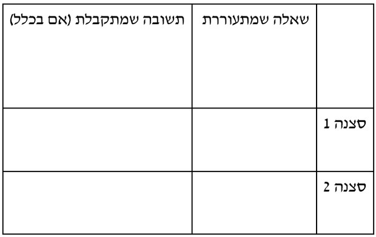

ז'אנר המותחן הוא ז'אנר רחב ביותר (מטא-ז'אנר) ובשל כך הבנת המוסכמות הסיפוריות שלו יכולה לבלבל את הכותבים. לעתים הז'אנר חופף לז'אנרים אחרים (כמו להרפתקאות), וכמעט תמיד הוא לא מותחן בלבד אלא מעורבב עם עוד ז'אנר כמו אקשן, מותחן פשע או מותחן פסיכולוגי, אימה, משטרה, ריגול ועוד. לכן, מבחינה סיפורית טכנית קשה לבודד את המותחן ויש להתייחס להצלבה שלו עם הז'אנר הנוסף. ברמה הסיפורית אנו נתייחס לז'אנר זה מבחינת התחושות שהוא מעורר בקרב הצופים.
סרט מתח מוגדר על פי מצב רוח המעניק לצופה תחושות מוגברות של ציפייה, חרדה, התרגשות וכמובן מתח. לכל הסרטים באשר הם יש איכות מותחנית במינון מסוים, ולמידת הטכניקות שיוצרות את האפקטים הללו רלוונטית לכל סוגי הסיפורים.
הרציונל במהלך הלימודי: מכיוון שזה הפרק הראשון בלימודי ז'אנרים, נתעכב תחילה על הקשר שבין הז'אנר לסיפור, נתעמק בנושא של ציפיות ומוסכמות, ולאחר מכן נעמיק באופן ספציפי במותחן האימה כמקרה בוחן. מותחן האימה נבחר בשל ההיכרות היחסית של הלומדים בגילים אלה עם הז'אנר. הנושא השני בפרק זה עוסק בכל האלמנטים הסיפוריים היוצרים מתח. יש לתרגל באופן מעשי טכניקות אלו, באמצעות ארגז הכלים והשאלות המכוונות לכתיבת סצנות. ז'אנר המותחן הוא קרקע נכונה להתעמקות בהיבטים תסריטאיים של בניית דמות וגם להתייחסות לעיקרון תסריטאי חשוב, האנטגוניזם. נעמיק בשני נושאים אלו בהקשר הכללי ובהקשר למותחן.
- א.1. הקשר שבין הז'אנר לסיפור.
- א.2 מאפיינים סיפוריים של מותחן: המכניקה של המתח.
- א.3 הפרוטגוניסט במותחן – בניית דמות הגיבור.
- א.4 עקרון האנטגוניזם במותחן ובסיפור.
- התלמיד יבין את המשמעות של מוסכמות וציפיות סיפוריות של ז'אנר, ובפרט של המותחן.
- התלמיד יבין לעומק ויתרגל את העקרונות הסיפוריים – המכניקה של יצירת מתח.
- התלמיד יפנים שהעקרונות הסיפוריים ליצירת המתח תקפים לכל סוגי הסיפורים.
- התלמיד יקרא סיקוונס כתוב של תסריט מתח וידע לאפיין כתיבה מסוג זה.
- התלמיד יבין את חשיבות יצירת ההזדהות של הצופה עם הפרוטגוניסט.
- התלמיד יבין כי פרוטגוניסט שהוא דמות עמוקה, מורכבת ורב-ממדית הוא מרכיב חיוני של מותחן בפרט וסיפור בכלל.
- התלמיד יבין ויתרגל את הטכניקה של בניית דמות עגולה, מורכבת ורב-ממדית.
- התלמיד יצפה בסרט "שתיקת הכבשים" ויבין את עיצוב הדמויות של הפרוטגוניסט והאנטגוניסט במותחן.
- התלמיד יפנים את עקרון האנטגוניזם ויסביר איך הוא מיושם במותחן ובסיפור.
- מוסכמה – קונבנציה שהיא בעצם קוד או צופן שעוזר לצופה להבין לאיזה ז'אנר הסרט משתייך.
- ציפיות הצופים – הצופים מגיעים לסרט מז'אנר מסוים עם ציפיות מוקדמות. זיהוי הנוסחאות המוכרות מסייע לצופה להבין את העלילה, לעקוב אחריה ולנסות לחזות את התפתחותה. סרט עשוי לאשש את ההיפותזות של הצופים, אך גם להפתיע ולהפריך את הציפיות.
- אפקט "מתח השהיה" בסיפור – ציפייה דרוכה ומתוחה לשאלה כלשהי שהסיפור מעורר בשל העובדה שהתשובה לשאלה מושהית.
- מבנה עלילתי של מבוך פתלתל – מטפורה לעלילה המותחנית המתאפיינת בסטיות מרצף האירועים המרכזי ולא מתפתחת לקראת התרה וקונפליקט בקו ישר אלא תוך כדי סטיות לעניינים צדדיים, הרבה נקודות מפנה והרבה הטעיות.
- השעון המתקתק – העצמת לחץ הזמן, דדליין. יש זמן מוגבל לגיבור לפעול, וכל מצב של אי-פעולה שורף זמן יקר.
- המרחב המותחני – מרחב המספק חוויה של עומס ריגושי וכאוס ומעצים ניכור. מרחב כפול המתאפיין בטרנספורמציה ממרחב מוכר למרחב מופלא. תחושה היוצרת מתח והשהיה בין תחושה של מוכרות וזרות, בין ביטחון לסכנה.
- הזרה – המונח הזרה נגזר מלשון "זר". ההזרה מציגה תופעה מוכרת במציאות בדרך חדשה. היא מאפשרת להתבונן במציאות באור חדש.
- מקגאפין – אובייקט, מכשיר או אירוע הנחוצים לעלילה ולמוטיבציה של הדמויות, אך לא משמעותיים, חשובים או רלוונטיים כשלעצמם.
- אירוניה דרמטית – פער בין המציאות העלילתית להבנתה של דמות את אותה מציאות. הפער בא לידי ביטוי בתפנית שמפתיעה את הדמות וסותרת את ציפיותיה וכוונותיה.
- קליף האנגר – סיום מותח ובלתי פתור של פרק ביצירה אמנותית, במקרה שלנו סיום של סצנה או סרט.
- הכנה (Set up) – בתחילת התסריט נשתל חפץ, משפט, בדיחה פרטית של הדמויות או פעולה מסוימת. המטרה היא להשתמש בכך בהמשך התסריט ויש ציפייה לשימוש זה בהמשך התסריט.
- גמול (Pay off) – הציפייה כיצד יקבל האובייקט את הגמול מסקרנת את הצופה, יוצרת מתח ודרמה, ומתקבל הגמול אחרי שחזינו מה עומד לקרות.
- הזדהות – התחושה שנוצרת אצל הצופים כשהם מרגישים שבינם לבין הדמות הראשית יש מכנה אנושי משותף. ההזדהות של הצופים עם הפרוטגוניסט יוצרת מעורבות רגשית שבה הצופה חש מעורב בכל עלילת המסע של הגיבור.
- חיים פנימיים – הביוגרפיה של הדמות מהלידה ועד תחילת הסרט.
- חיים חיצוניים – הגילוי של הדמות מהרגע שהסרט מתחיל ועד מסקנת הסיפור.
- אפיון דמות – סך כל התכונות של הדמות שניתן לראות באופן ממשי.
- אופי של דמות – טבעה ואופייה האמיתי של הדמות המתבטאים באמצעות בחירות ופעולות שלה.
- What at stakes – הסיכון (ההימור) של הפרוטגוניסט. במצב של איום הפרוטגוניסט נאלץ לסכן משהו משמעותי ובעל ערך כדי להרוויח את מושא תשוקתו. הערך של התשוקה עומד ביחס ישיר לסיכון שהדמות מוכנה לקחת כדי להגשים אותה. ככל שהערך גדל כך גם הסיכון.
- עקרון האנטגוניזם – ככל שכוחות האנטגוניזם העומדים מול הפרוטגוניסט רבי עוצמה ומורכבים כך יהפוך הסיפור למוחשי, מרתק אינטלקטואלית וחזק רגשית.
כל ז'אנר כופה מוסכמות על עיצוב הסיפור: רקע ייחודי, אירועים הכרחיים, תפקידים קבועים. הקהל מכיר את המוסכמות הללו ומצפה לראותן מתגשמות. על כן בעיצוב הסיפור הכותב חייב לקחת בחשבון את הקהל וציפיותיו. כדי לעמוד בציפיות התסריטאי צריך לשלוט במוסכמות הסיפוריות של הז'אנר.
1. מוסכמות וציפיות
הז'אנר הוא אפוא מושג מורכב ובעל משמעויות רבות... זהו מעין חוזה בין היוצרים לצופים באשר להנחות המוקדמות שיש להפעיל בעת הצפייה כדי להבין את הסרט וליהנות ממנו. התסריטאי צריך להבין כבר בשלב הכתיבה את מוסכמות הז'אנר וציפיות הצופים. יש להדגיש כי המוסכמות הן לא מגבלה אלא השראה. המטרה היא להשאיר את המוסכמה ולהימנע מקלישאה.
תרגיל – מוסכמות וציפיות
- נחפש סרטים שיוצאים עכשיו לאקרנים מז'אנרים שונים: אימה, מד"ב, מחזמר וכדומה.
- כיצד הטריילר והפוסטר ממסגרים את הז'אנר?
- מהן הציפיות שלכם כצופים: איזה רגש תחוו בסרט?
- איזה סוג סיפור יהיה?
- איזה סוג של גיבור יהיה בסרט?
- איזה סוג של מכשולים? מול מי הגיבור נלחם?
- אילו סצנות אתם מצפים לראות?
מבוא לנושא הבא: כעת יש לצפות בשלושה טריילרים מז'אנר המותחן ולבחון דרכם את השאלות הנ"ל. לדיון – מהן המוסכמות הסיפוריות?
המותחן – מוסכמות וציפיות
הז'אנרים של המותחן מעבדים חרדות ואיומים שונים, כמו איום על החוק והסדר (מותחן משטרה ובלש), איום על ביטחון המדינה (ריגול), איום בהכחדה (אסונות) וחרדה לשלמות הגוף (אימה). האיום לרוב מיוצג על ידי אנטגוניסט.
המותחן הוא ז'אנר שהעלילה שלו מונעת על ידי אנטגוניסט שמגלם את הרוע (דמות הנבל). השאלה שבבסיס כל סיפור מתח היא: כיצד אנו מתמודדים עם כוחות הרשע הקיימים ולעתים קרובות בלתי מובנים בחיי היומיום. המותחן מספר על מאבק חיצוני שהופך לפנימי. הגיבור נאלץ לעשות בחירות בסיסיות כדי לשחרר עוצמה מיוחדת הטמונה בו.
מאפיינים נרטיביים
- צורך – הצורך של הגיבור הוא המנוע שבבסיס הסיפור. במותחן הצורך הוא להחזיר ביטחון.
- קונפליקט – הפשע שביצע האנטגוניסט הופך בהמשך לאישי באופן כלשהו מבחינת הגיבור.
- נקודת השיא, ההימור – הצורך של הגיבור בביטחון מגיע לסכנה הכי גדולה שלו. בנקודת השיא תהדהד התמה של הסיפור. תמה אופיינית למותחנים היא גורל אכזר ממוות.
- סצנות "מחייבות":
- סצנת גילוי הפשע המעיד על אנטגוניסט, לרוב יש מספר קורבנות.
- סצנה המשבחת את ערמומיותו של האנטגוניסט.
- סצנת גילוי: האנטגוניסט הופך את הפשעים לאישיים מבחינת הגיבור, הגיבור הופך לקורבן העיקרי.
- הגיבור בחסדי האנטגוניסט: אירוע הליבה, הגיבור מתגבר כי גילה את עוצמתו המיוחדת.
- סצנת סוף שקרי.
2. מותחן האימה – מקרה בוחן
ז'אנר זה נקרא על שם האפקט הרגשי שהוא מבקש לעורר בצופים. מה יכול לעורר אימה ברמה הבסיסית ביותר? מפלצת, דמות מפלצתית. מה מגדיר דמות כמפלצת? חריגה מהנורמה. זומבי, ערפד, שדים, פסיכופתים. למעשה, תת-ז'אנרים של סרטי האימה מוגדרים על פי סוג המפלצת. חשוב לציין כי סרטי אימה הם תמיד משל למשהו, ייצוג לסיוטים האישיים או החברתיים שלנו, חרדה חברתית.
סרטי משספים: נעמיק בתת-ז'אנר זה של מותחן האימה, שכן מוסכמה ז'אנרית מרכזית שלו היא מבנה הסיפור. סרטי משספים מזוהים עם מבנה סיפור נוסחתי ועם דמויות טיפוסיות. בסרטי משספים יש דמות של פסיכופת שמשוטט מחוץ לפריים ומאיים על קבוצה של בני נוער או צעירים ואחר כך משסף אותם בשיטתיות.
מאפיינים נרטיביים:
- האנטגוניסט – בוגימן, האיש ללא פנים, רוצח על-אנושי, אינו בריא בנפשו ואינו ניתן לעצירה, מונע מרצון לנקמה ולרוב עוטה מסכה.
- הפרוטגוניסט – "הנערה האחרונה" – זו "שהמפלצת" לא מצליחה להכניע.
- הקורבנות – לרוב קבוצת מתבגרים, בני טיפש-עשרה המאוימים על ידי דמות פסיכופתית.
- מועד העלילה – העלילה תתרחש בזמן חופשה, חגיגה או ציון תאריך מיוחד.
- הלוקיישן – העלילה תתרחש בדרך כלל בסביבתם המוכרת של הקורבנות שבה הם מרגישים בטוחים.
המהלך העלילתי של סרטי משספים:
- חבורת בני נוער חיה ופועלת בהתנהגות "לא מוסרית".
- רוצח חסר פנים מופיע.
- גופות מתחילות להיערם.
- הנערה האחרונה, "הדמות המוסרית", נשארת לבדה להתמודד מול הרוצח.
- ניצחון זמני של הנערה האחרונה על הרוצח (אי אפשר באמת לחסל אותו).
- קריצה לסרט המשך – הרוצח כנראה עדיין בחיים.
תרגיל: צפו בסיקוונס הפתיחה של הסרט "כלבת" (קשלס ופפושדו, 2010) ופרטו איך המוסכמה הסיפורית הז'אנרית מתבטאת בו.
להעשרה: הפודקאסט "עושים מזה סיפור": על זומבים וערפדים וסרט אימה כסרט פוליטי
האזנה לפודקאסטהמכניקה של המתח רלוונטית כמיומנות סיפורית לכל סוגי הסיפורים ולאו דווקא למותחנים. טכניקות כמו "שאלת מתח" נרצה להציב בכל תחילת סיפור באשר הוא.
1. אפקט המתח – השהיה
חוקר הקולנוע דיוויד בורדוול טוען כי הצופה בסרט הקלאסי מכיר את הסכמה הנרטיבית של אותם סרטים ולכן הוא לא צופה פסיבי אלא אקטיבי...
בדפוס סיפורי זה קיימים שלושה מאפיינים חשובים:
- ציפייה דרוכה לתשובה כלשהי.
- ניגוד קיצוני בין שתי תשובות אפשריות, שרק אחת תתממש.
- גורם הסבירות משפיע על אפקט המתח – ככל שהתממשות התוצאה הרצויה מבחינת הצופים סבירה פחות גובר אפקט המתח. אלמנט זה יוצר תחושה של תקווה ופחד.
תרגיל: צפו בסרט הקצר "The pavement" (טיילור אנגל, 2014):
יש לערוך צפייה אחת רציפה וצפייה שנייה עם עצירות.
בכל פעם שמגיעים למדרכה הסצנה משוחזרת מחדש, ובכל פעם נמסר מידע אחר על הסיפור. יש לעצור אחרי כל פעם שמגיעים למדרכה ולמלא את טבלה 1: ההבדל בין עלילה לסיפור.
כיצד הסיפור מתעתע בנו על ידי מודל השאלה והתשובה?
2. פערי מידע
אירוניה דרמטית – מצב שבו הצופה יודע יותר מהדמות. גורל בלתי נמנע שיוצר מתח. כדי ליצור אירוניה דרמטית עלינו לחשוף לקהל מידע לפני שאנחנו חושפים אותו לדמויות.
אפקט ההפתעה – מצב שבו הצופים והדמויות יודעים אותו דבר, אין פער בין המציאות העלילתית להבנה של הדמות את אותה מציאות, ולכן כשהמציאות מתגלה והדמות מופתעת גם הצופה מופתע.
בסצנת הפתיחה של "ממזרים חסרי כבוד" של טרנטינו מ-2009 הסרט נפתח בצרפת הכבושה בשנת 1941. קולונל האנס לנדה, המכונה "צייד היהודים", מגיע לבית משפחת דרייפוס...
לצפייה – 10 דקות ראשונות. "ממזרים חסרי כבוד" (נטפליקס)
דיון:
- כיצד משתמש טרנטינו באירוניה דרמטית כדי לבנות מתח?
- מהי שאלת המתח שמתעוררת?
- כיצד התשובה מושהית?
- אילו שתי תוצאות אפשריות בסיטואציה?
- כיצד גורם הסבירות משפיע על אפקט המתח?
סצנת הפתיחה - אלמנטים של מתח ואירוניה דרמטית.
לצפייה בסרטון3. מבנה עלילתי של מבוך
סיפורים בכלל מתאפיינים בז'אנר של מבוך, וסיפורי מותחן מצטיינים בכך. תעייה במבוך היא מטפורה הולמת למעקב אחרי הסיפור. המבוך מועצם במותחנים ע"י מבנה עלילה פתלתל והשעון המתקתק.
4. מקום ההתרחשות
המרחב המותחני הוא מרחב עירוני ומודרני בעיקרו. העיר מספקת חוויה של עומס ריגושי וכאוס, יוצרת עומס מוזר על החושים ומעצימה ניכור. כמו כן, ישנו מאפיין של טרנספורמציה ממרחב מוכר למרחב מופלא.
הזרה – הסתכלות על דברים שגורים ומוכרים במבט אחר, חדש ושונה מזה שהצופים רגילים לו.
5. מקגאפין
מקגאפין הוא אובייקט, מכשיר או אירוע שנחוץ לעלילה ולמוטיבציה של הדמויות אך אינו משמעותי, חשוב או רלוונטי כשלעצמו.
6. קליף האנגר
סיום מותח ובלתי פתור של פרק ביצירה אמנותית, במקרה שלנו סיום של סצנה. סיום מסוג קליף האנגר נועד ליצור אצל הצופים תחושה של מתח שתגרום להם להתעניין בסצנה הבאה תוך תחושת מתח ודריכות – מה יקרה?
7. הכנה וגמול
בנייה של ציפייה לגבי מה שעתיד להתרחש, או בקיצור הכלל של צ'כוב – אקדח שתלוי על הקיר במערכה הראשונה, יירה במערכה אחרונה. הכנה (Set up) וגמול (Pay off).
תרגול
קריאה מודרכת סצנת מתח: "הנוער" מאת תום שובל, סצנות 1-10. לקריאת התסריט
דיון:
- מהי האווירה בסצנה ובאילו תיאורי פעולות משתמש הכותב כדי ליצור את המתח כבר בשלב התסריט?
- כיצד המודל "שאלה – תשובה" בונה את המתח בסצנה?
- כיצד מתואר מרחב ההתרחשות בסצנה? סמנו משפטים שמתארים אותו. כיצד משרת המרחב את אפקט המתח?
- כיצד כבר בשלב כתיבת התסריט נעשה שימוש בסאונד כדי להעצים את אפקט המתח?
- כיצד משתמש הכותב בקליף האנגר, הכנה וגמול?
- מאיזו נקודת מבט כתובה הסצנה?
תרגיל כתיבה – סצנת מתח
נתייחס בכתיבה למרכיבי המתח שנלמדו: את עלילת המותחן מניע אנטגוניסט (נוכח או לא נוכח), והגיבור מחליט לפעול כנגד האיום. בחרו סיטואציה שמקיימת עיקרון זה. לאחר מכן נבחן את האלמנטים הבאים: מקום התרחשות, אווירה והזרה, שאלות מושהות, נקודת מבט ואירוניה דרמטית, תקווה ופחד, נקודת מפנה והטעיה.
הגיבורים השונים של סרטי המותחן יכולים להיות דמויות מורכבות או לא מוסריות או כמו במקרה של היצ'קוק גיבור שהוא אדם מן השורה שנקלע לסיטואציה מאיימת. נשאלת השאלה כיצד יוצרים הזדהות עם דמות לא מוסרית? סיפורי מתח טובים כוללים לרוב גיבורים פגומים ומורכבים.
1. בניית דמות
הפרוטגוניסט הוא המוביל את סיפור הסרט. ככל שנדע עליו יותר כך נצליח לברוא אותו כדמות אותנטית, חיה ונושמת. גיבור אנושי יהיה אדם שהתסריטאי בחר לו קווי אופי ואפיון שהופכים אותו למורכב בעל עומקים וגוונים שונים – גיבור שנוגע ללב ככל אדם.
הנה המפגש הראשון שלנו עם המאפיונר האכזרי טוני סופרנו:
ארגז כלים לבניית דמות: חיים חיצונים וחיים פנימיים
- חיים פנימיים – מהלידה עד תחילת הסרט. כולל תחקיר יצירתי: היכן נולד? באיזה בית גדל? מה הפצע בעברו? הסדק של הגיבור הוא הנקודה הרגישה שלו, המטען האישי שהוא נושא איתו מהעבר. המאורע המחולל לוחץ על הסדק.
- חיים חיצוניים – מהרגע שהסרט מתחיל ועד מסקנת הסיפור. עיצוב הדמות מתחיל בארגון של שני היבטים מרכזיים:
- אפיון: סך כל התכונות שניתן לראות (סוציולוגי, פסיכולוגי, מאפיינים פיזיים).
- אופי: מתבטא באמצעות בחירות ופעולות של הדמות. המפתח לאופי של דמות הוא תשוקה והרצון שלה לרדוף אחרי מושא התשוקה.
דיון – גילוי דמות
נצפה בסיקוונס הפתיחה של "שתיקת הכבשים":
- כיצד נמסר המידע על הדמות כבר באקספוזיציה?
- כיצד הדמות מאופיינת? התייחסו לאופי ולאפיון.
- מהם לדעתכם החיים הפנימיים שלה?
2. ההימור של הפרוטגוניסט
הכינוי התסריטאי לסיכון של הפרוטגוניסט נקרא באנגלית what at stakes. נשאל מה מוטל על כף המאזניים – בצד אחד הגשמת התשוקה, בצד השני המחיר שעליו לשלם כדי להגשים את אותה תשוקה. סיפור בעל משמעות הוא סיפור עם סיכון אמיתי. הערך של התשוקה של הגיבור צריך להיות ביחס ישיר לסיכון להשגתה. ככל שהערך גדל, כך גם הסיכון.
ההימור של קלריס סטרלינג: נצפה בסצנת השיא הסרט.
לקראת השיא, הסרט עובר לסדרה של סצנות מהירות בעריכה מקבילה... אירוניה דרמטית זו גורמת לנו לחוות מתח וחרדה לגורלה. הנה הגענו לרגע השיא – להימור הגדול של קלריס. מצד אחד היא יכולה לסגת מהבית כאילו לא הבינה במי מדובר ולהזעיק את הסוכנים הגברים. מצד שני השעון מתקתק כי חייה של קתרין בסכנה. קלריס מחליטה שהיא יכולה ללכוד אותו בכוחות עצמה... הכבשים מעברה סוף סוף שותקות.
הנה סרטון שמסכם את עקרון הבחירה:
תרגיל מסכם כיתתי – בניית דמות
מתרגלים יחד בקבוצה בניית דמות עגולה לסרט מתח. יש לתת נקודת מוצא כללית לסיעור המוחות. לאחר מכן מתחילים לעצב יחד את הדמות בעזרת שאלות מנחות לפי הטכניקה של חיים פנימיים וחיים חיצוניים.
בסרטים דרמטיים המנוע שמחולל את העלילה הוא סיפור העבר של הפרוטגוניסט והרצון שלו. לעומת זאת, בז'אנר המותחן מה שמניע את העלילה לרוב הוא הסיפור והפעולות של האנטגוניסט. העלילה של מותחנים מבוססת על עקרון האנטגוניזם.
עקרון האנטגוניזם בסיפור
ככל שכוחות האנטגוניזם העומדים מול הפרוטגוניסט רבי עוצמה ומורכבים כך יהפוך הסיפור למוחשי, מרתק אינטלקטואלית וחזק רגשית. כוחות אנטגוניזם אין פירושם דמות מסוימת או נבל מסוים, אלא סך כל הכוחות המתנגדים לדמות ומונעים ממנה להשיג את מושא תשוקתה. במותחן הכוח האנטגוניסטי יהיה לרוב דמות.
באותו אופן שבו הגיבור צריך להיות פגום ומורכב, גם האנטגוניסט לא צריך להיות פשוט רוע טהור. גם אם מעשיו בלתי נסלחים, המניעים שלו צריכים להיות מושרשים ברצון או ברגש שאפשר להבין. האנטגוניסט צריך להיות מונע על ידי ההיגיון הפנימי המעוות שלו.
האנטגוניסט במותחן
האנטגוניסט הוא הדמות שמניעה את הסיפור במותחן. הוא יוצר את המאורע המחולל שמוציא את הגיבור למסע. ברוב הסרטים הדרמטיים הדמות הראשית והאנטגוניסט קשורים פסיכולוגית. חולשתה של הדמות הראשית קשורה לסוג הפשע שהאנטגוניסט מבצע, וסוג הפשע הוא הגזמה מפלצתית של החולשה הזו.
החולשה והפגיעות של קלריס סטרלינג ב"שתיקת הכבשים" הן שהיא מרגישה חסרת אונים בין גברים חזקים... ההגזמה המפלצתית של חולשתה של קלריס קשורה לפשעים המרושעים של באפלו ביל: פשיטת עורות של נשים ולבושם. קלריס יורדת אל חניבעל לקטר מתחת לפני השטח למרתף... הפגישה של קלריס עם חניבעל לקטר היא בעצם פגישה עם החלק האפל והלא מודע בנפשה.
דמות הנבל
דמות הנבל מאפשרת לנו כצופים לחוות מפגש אפל ומורכב, להביט לרוע האנושי בעיניים ולמתוח את הגבול. האתגר הכי גדול הוא לגרום לצופה להתאהב בדמות הנבל וכך לבחון את גבולות המוסר. סוגים של נבלים ואופן הצגתם בתסריט:
תרגיל
על פי המאפיינים שנלמדו ביחידה קודמת, בנו דמות עגולה של אנטגוניסט שתעמוד מול הדמות שיצרנו בתרגיל הכיתתי.
קווים מנחים לבניית האנטגוניסט:
- איזה אנטגוניסט מייצג אמונה שונה משל הגיבור שלי?
- כיצד הוא מאתגר את תפיסת העולם או המוסר של הגיבור?
- במה האנטגוניסט דומה לגיבור?
- מהי התשוקה של האנטגוניסט וכיצד הוא יכול להגשים אותה?
- מהם המניעים של האנטגוניסט?
- כיצד מתקיימת סתירה בדמותו של האנטגוניסט?
תרגיל מסכם: כתיבת סצנת חקירה – אנטגוניסט מול פרוטגוניסט
במהותה, סצנת חקירה היא סצנה של חילופי שאלות ותשובות בין שתי דמויות. הקונפליקט בסצנות חקירה נוצר מכך שדמות אחת רוצה מידע מדמות אחרת, ואותה דמות רוצה להגן על המידע ולא למסור אותו.
1. צפו בסרטון הבא – תסריט סצנת החקירה של ג'וקר וג'ורדן ("האביר האפל"):
ניתוח תסריט מול מסך - סצנת החקירה של הג'וקר.
לצפייה בסרטון2. כתבו סצנת חקירה עם האנטגוניסט והפרוטגוניסט שבניתם בתרגיל הקודם. התייחסו לשאלות: באיזו סיטואציה מתבצעת החקירה? אצל מי השליטה? כיצד השליטה משתנה? מה מוטל על הכף?